기상기사 (2008-07-27 기출문제)
1과목: 기상관측법
1. 라디오존데에 의한 고층기상 관측 시 읽을 수 있는 방위각의 범위는?
- 0° ~ 90°
- 0° ~ 180°
- 0° ~ 270°
- 0° ~ 360°
(정답률: 알수없음)

2. 기상레이더에서 비나 눈 등에 의해 생기는 에코(echo)는?
- 층상에코
- 이상전파에코
- 파랑에코
- 지형에코
(정답률: 알수없음)
3. 라디오존데(radiosonde) 관측으로 측정하지 못하는 기상요소는?
- 온도
- 강수
- 기압
- 습도
(정답률: 알수없음)
4. 비행 중인 비행기 관측보고(AIREP)에 반드시 보고하여야 하는 것은?
- 청천난류(clear air turbulence)
- 시정(humidity)
- 기온(temperature)
- 기압(atmospheric pressure)
(정답률: 알수없음)
5. 일사 관측에 대한 설명 중 틀린 것은?
- 일사량이란 지구표면에서 받는 태양열량의 강도를 말하는 것이며 직사일사와 수평면일사로 구분된다.
- 직달일사 관측은 은반 일사계로 관측한다.
- 일사량의 단위는 [ly∙min-1],[cal∙cm-2∙hr-1], [cal∙cm-2∙day-1]로 표시한다.
- 수평면 일사관측은 조르단 일조계로 관측한다.
(정답률: 알수없음)
6. 다음 중 기본 일사 관측소(principal radiation station)에서 관측하는 요소가 아닌것은?
- 직달 일사량
- 오존량
- 전천 일사량
- 일조 시간
(정답률: 알수없음)
7. 기상레이더에서 일정방위각 방향으로 에코강도의 연직 표출이 가능한 표출방법은?
- PPI
- RHI
- CAPPI
- VAD
(정답률: 알수없음)
8. 중간 정도의 단속적인 눈을 표시하는 기호는?
- ⁑
- **
- ⁂
- ⁑
(정답률: 알수없음)
9. 전자파를 이용한 펄스 레이더(pulse radar)의 설명 중 틀린 것은?
- 목표물의 거리를 측정하는데 용이하다.
- 주기적인 짧은 펄스(pulses)로 발신한다.
- 레이더의 일반적인 타입(type)이라 할 수 있다.
- 거리측정에는 음속(speed of sound)을 이용한다.
(정답률: 알수없음)
10. 켈빈 온도 눈금(Kelvin temperature scale)의 설명 중 틀린 것은?
- 절대온도 눈금(absolute temperature scale)과 같다.
- 빙점과 비등점의 차이는 180K이다.
- 빙점은 273.15K이다.
- 비등점은 약 672R이다.
(정답률: 알수없음)
11. 기상위성 관측에 대한 설명 중 틀린 것은?
- 정지 위성은 종관 규모기상 관측에 적당하다.
- 정지 위성은 적도나 극지방 관측에 모두 용이하다.
- 궤도 위성은 극지방 관측이 용이하다.
- 궤도 위성은 중규모 기상 관측에 적당하다.
(정답률: 알수없음)
12. 수은기압계의 시도에서 관측소기압(현지기압)을 산출 할 때 필요한 보정과 가장 거리가 먼 것은?
- 기차보정
- 중력보정
- 온도보정
- 해면경정
(정답률: 알수없음)
13. 다음 중 대기진상(lithometeors)이 아닌 것은?
- 수상(Air hoar)
- 연무(Haze)
- 강회(Ash fall)
- 황사(Yellow sand)
(정답률: 알수없음)
14. 다음 천기부호 중 언비(우빙, freezing)를 나타내는 것은?
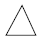
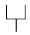
(정답률: 알수없음)
15. m/sec으로 나타낸 풍속을 약 몇 배 하면 노트(knot)로 나타낸 풍속이 되는가?
- 1.5배
- 2배
- 3배
- 3.5배
(정답률: 알수없음)
16. 구름의 연변에 평행한 줄무늬로 나타나며 녹색이나 복숭아색이 탁월한 기상현상은?
- 채운(irisation)
- 무리(halo phenomena)
- 코로나(corona)
- 어광(glory)
(정답률: 알수없음)
17. 정지 기상위성에 대한 설명으로 옳은 것은?
- 위성이 지구의 관측자와같은 선속도(접선속도)로 회전한다.
- 위성의 공전주기가 지구의 자전주기와 일치하고, 위성의 궤도는 지구의 적도면과 일치한다.
- 다른 천체에서 위성을 보았을 때 정지되어 있다.
- 정지 위성 한 개로 지구 전 역과 연결하여 통신할 수 있다.
(정답률: 알수없음)
18. 다음 전자파 중 파장이 가장 짧은 것은?
- 가시광선
- 근적외선
- 자외선
- 텔레비전파
(정답률: 알수없음)
19. 뷰포트(Beaufort) 풍력계급표에 대한 설명 중 틀린 것은?
- 풍력계급의 각 번호는 0에서 12까지 13등급의 계급으로 되어 있다.
- 계급번호(B)와 그에 상당하는 풍속 V(m/s)는 V=0.836B3/2의 관계가 있다.
- 계급번호가 커질수록 풍속도 증가한다.
- 파고(波高)에서 풍력을 추정해도 무방하다.
(정답률: 알수없음)
20. 구름 중 전체로는 층을 형성하나 뭉클쿵클한 모양의 하층운으로, 우리나라에서 출현율이 평균 약 70%로 흔한 운형은?
- 권층운(Cs)
- 고층운(As)
- 난층운(Ns)
- 층적운(Sc)
(정답률: 알수없음)
2과목: 대기열역학
21. 절대온도(K) 0도는 다음 중 어떤 온도를 말하는가?
- 대기압에서 물과 얼음이 공존하는 온도
- 헬륨가스가 액화하는 온도
- 분자의 평균운동에너지가 0이 되는 온도
- 화씨 -273℉인 온도
(정답률: 알수없음)
22. 다음 중 대기가 가장 불안정한 경우는?
- 그 대기의 기온감율이 건조단열감율보다 클 때
- 그 대기의 기온감율이 건조단열감율보다는 작고 포화단열감율보다는 클 때
- 그 대기의 기온감율이 포화단열감율과 같을 때
- 그 대기의 기온감율이 포화단열감율보다 작을 때
(정답률: 알수없음)
23. 대기 중에서 일어나는 과정 중 기체의 열역학적 변수가 아래 식으로 주어질 때, 이 과정은 다음 중 어느 과정에 접근하는가? (단, P:기압, α:비용, Cp:정압비열, Cv:정적비열)
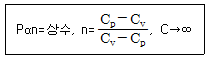
- 등압과정
- 등밀도과정
- 단열과정
- 등온과정
(정답률: 알수없음)
24. 단위질량의 건조공기의 온위(θ)와 entropy(ø)와의 관계는? (단, ℓ : 수증기의 기화잠열, Cp : 정압비열, Cv : 정적비열)
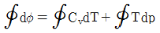
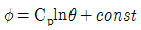
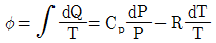
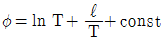
(정답률: 알수없음)
25. 응결전에는 일정한 값을 가지다가 응결한 후에는 그 값이 증가하는 것은?
- 가온도
- 수증기압
- 노점온도
- 온위
(정답률: 알수없음)
26. 대기 중에서 T를 기온, Tw를 습구온도, Td를 이슬점온도라고 할 때 그 관측값이 높은 순서로 기술된 것은?
- T ＞ Tw ＞ Td
- Td ＞ T ＞ Tw
- T ＞ Td ＞ Tw
- Td ＞ Tw ＞ T
(정답률: 알수없음)
27. 1000hpa 면의 공기가 500hpa 면의 고도까지 단열적으로 상승하였다면 다음 주 옳은 것은?
- 이 공기의 위치에너지는 증가했으나 엔트로피는 감소했다.
- 이 공기의 위치에너지는 증가했으나 엔트로피는 일정하다.
- 이 공기의 위치에너지와 엔트로피는 모두 증가했다.
- 이 공기의 위치에너지와 엔트로피는 모두 감소했다.
(정답률: 알수없음)
28. 건조공기에서 R을 그 기체상수, Cp를 정압비열, Cv를 정적비열이라고 한다면 다음 중 그 크기가 맞는 것은?
- R ＞ Cp ＞ Cv
- Cp ＞ Cv ＞R
- Rv ＞ R ＞ Cp
- Cp ＞ R ＞ Cv
(정답률: 알수없음)
29. 가온도
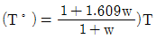
이라면 이 식에서 w는? (단, T는 공기의 온도이다.)- 상대습도
- 혼합비
- 증기압
- 실효습도
(정답률: 알수없음)
30. 수백 m의 두께를 가진 기층이 상승 또는 침강하는 경우에 그 기층이 안정한 상태로 있는가 또는 불안정하게 되는가는 주로 무엇에 의해 결정되는가?
- 기주 내의 기압 분포 상태
- 기주 내의 수증기 분포상태
- 기주 내의 불순물 분포상태
- 기주 내의 밀도
(정답률: 알수없음)
31. 건조단열선과 등온선 사이의 각이 90°인 단열선도는?
- Skew T- log P 선도
- Claperyron 선도
- Stũve 선도
- Tephigram
(정답률: 알수없음)
32. 단열선도(skew T-log P diagram)에는 기본 등치선이 몇 가지 그려져 있는가? (단, 층후 계산척 제외)
- 3
- 5
- 7
- 10
(정답률: 알수없음)
33. 열역학선도상에서 폐곡선으로 이루어진 면적이 에너지의 단위로 되지 않는 선도는?
- Clapeyron 선도
- Tephigram
- Emagram
- Stũve 선도
(정답률: 알수없음)
34. 다음 표준대기 중 가장 안정한 곳은?
- 대류권 중부
- 성층권 중부
- 중간권 중부
- 대류권 상부
(정답률: 알수없음)
35. 건조공기의 경우 정압열용량 Cp 와 정적열용량 Cv 는 각각 얼마인가? (단, 여기서 R*는 보편 기체 상수이다.)
- Cp = 3/2R* , v = 1/2R*
- Cp = 5/2R* , Cv = 3/2R*
- Cp = 7/2R* , v = 5/2R8
- Cp = 4R* , Cv = 3R*
(정답률: 알수없음)
36. 습윤공기의 밀도를 ρ, 건조공기의 밀도를 ρd, 수증기의 밀도를 ρv라 할 때 혼합비는?
- ρd/ρ
- ρv/ρ
- ρv/ρd
- ρ/ρv
(정답률: 알수없음)
37. Γ를 주위의 기온감율, Γd를 건조단열감율, Γs를 포화단열감율이라 할 때 조건부 불안정은?
- Γ ＞ Γd
- Γ＞ > Γs ＞ Γd
- Γd ＞ Γ > Γs
- Γ ＜ Γs
(정답률: 알수없음)
38. 대기가 정적으로 매우 안정할 때 나타나는 현상은?
- 신기루
- 새벽안개
- 적운
- 뇌우
(정답률: 알수없음)
39. 건조대기에 대하여 정적으로 안정한 대기는?
- 온위가 연직으로 증가한다.
- 온위가 연직으로 감소한다.
- 온위가 연직으로 일정하다.
- 기온이 연직으로 감소한다.
(정답률: 알수없음)
40. 습윤단열과정(moist adiabatic process)과 위단열과정(pseudo-adiabatic process)에 관한 설명 중 틀린 것은?
- 습윤단열과정은 응결한 수분은 낙하하지 않고 그 계(系)에 남는다. 이와 같은 과정은 가역과정이다.
- 습윤단열과정에서 응결한 수분은 즉시 낙하해 버린다는 가정이다. 이와 같은 과정은 가역과정이다.
- 위단열과정은 응결한 수분은 즉시 낙하해 버린다는 가정이다. 이와 같은 과정은 비가역과정이다.
- 실제 대기는 습윤단열과정과 위단열과정의 중간과정에 있다.
(정답률: 알수없음)
3과목: 대기운동학
41. 전향력(,Coriolis force)이 나타나게 되는 주 요인은?
- 지구의 자전
- 지구의 공전
- 지구의 중력
- 지구의 편평도
(정답률: 알수없음)
42. 실제 풍속 V, 코리올리 인자 f, 곡률반경 R이라고 할 때 경도풍에 대한 지균풍의 비 (Vg/V)는?
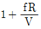
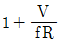
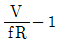
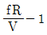
(정답률: 알수없음)
43. 경도풍과 가장 거리가 먼 것은?
- 기압 경도력
- 전향력
- 원심력
- 마찰력
(정답률: 알수없음)
44. 북반구 500hPa 면에서 등고선이 좁아지는 지역에서는 500hPa 지균풍이 어떻게 변화하는가?
- 풍속이 늦어지고 등고선이 높은 쪽으로 돈다.
- 풍속이 늦어지고 등고선이 낮은 쪽으로 돈다.
- 풍속이 빨라지고 등고선이 높은 쪽으로 돈다.
- 풍속이 빨라지고 등고선이 낮은 쪽으로 돈다.
(정답률: 알수없음)
45. 절대와도(absolute vorticity)란?
- 상대와도 + 코리올리 인자
- 상대와도 + 중력가속도
- 상대와도 - 코리올리 인자
- 상대와도 + 중력가속도 - 코리올리 인자
(정답률: 알수없음)
46. 다음 중 편서풍이 가장 강하게 발생하는 지역은?
- 영국의 동쪽
- 인도의 동해안
- 오스트레일리아의 남서해안
- 미국의 북동해안
(정답률: 알수없음)
47. 지상풍은 지상 1km 풍속의 몇 % 정도인가?
- 육지에서는 70% 정도
- 육지에서는 60% 정도
- 해상에서는 70% 정도
- 해상에서는 60% 정도
(정답률: 알수없음)
48. 어떤 지점에서 700hPa 고도로부터 상층으로 올라가면서 서풍풍속이 작아지고 있다. 700hPa 고도 이상에서 나타나는 현상은?
- 이 지점에서의 남북간의 기온 경도가 강해진다.
- 이 지점에서의 남북간의 기온 경도가 약해진다.
- 이 지점에서의 동서간의 기온 경도가 강해진다.
- 이 지점에서의 동서간의 기온 경도가 약해진다.
(정답률: 알수없음)
49. 기류에 수직인 방향 쪽의 운동 방정식이 아래와 같다면 식에서 V2/R은 무엇을 나타내는가? (단, V : 풍속, R : 기류의 곡률반경, f : 코리올리 인자, ρ : 공기밀도, P : 기압, n : 기류에 수직방향 쪽의 거리)
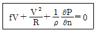
- 전향력
- 기압경도력
- 원심력
- 마찰력
(정답률: 알수없음)
50. 지표면의 불연속적인 성질에 따른 공기의 수평 이류와 관련되어 나타나는 층은?
- 혼합층
- 캐노피층
- 접지경계층
- 내부경계층
(정답률: 알수없음)
51. 기압경도력에 대하여 옳게 설명한 것은?
- 두 등압선 간격이 넓은 곳에서 더 강하다.
- 등압선 간격이 같을 때 고위도보다 저위도에서 더 강하다.
- 두 지점 사이에서는 기압차가 클수록 강하다.
- 지상일기도에서는 공기의 밀도와 관련이 없다.
(정답률: 알수없음)
52. 대기과학에서 사용하는 기본방정식을 표현할 때, 등고도좌표계 대신 등압 좌표계를 이용하여 얻어지는 장점이 아닌 것은?
- 기압경도력 계산이 간편해진다.
- 연속방정식에서 시간도함수를 고려할 필요가 없다.
- 연속방정식에서 공기 밀도를 고려하지 않아도 된다.
- 연직운동방정식에서 가속도항이 무시된다.
(정답률: 알수없음)
53. 대기 대순환 물통 실험에서 형성된 파의 형태에 영향을 주는 인자가 아닌 것은?
- 물통의 회전각속도
- 이중 물통의 반경 차
- 이중 물통의 반경 방향 온도 차
- 물통의 재료
(정답률: 알수없음)
54. 대기의 경우, 가장 작은 TPE(Total Potential Energy)를 가지는 경우는 언제인가?
- 등압면과 등온면이 평행할 때
- 등압면과 등온면의 교각이 클 때
- 등압면과 등온면의 교각이 작을 대
- 등압면과 등온면의 교각이 90도일 때
(정답률: 알수없음)
55. 소용돌이에서 경계층에서의 마찰수렴에 의해 유도된 이차순환에 대한 설명 중 틀린 것은?
- 마찰에 의한 e-배감시간규모(e-folding time)는 코리올리인자에 의해 좌우된다.
- 점성확산에 의한 마찰이 난류확산보다 이차순환유발에 효과적이다.
- 이차순환에 의한 종관규모 소용돌이의 소멸에 필요한 시간규모는 대략 20일 정도이다.
- 발달이 멈춘 태풍이 약화되어 소멸하는 것은 이차순환의 영향이다.
(정답률: 알수없음)
56. 와도에 관한 설명 중 옳은 것은?
- 직선 운동을 하는 유체의 와도는 항상 0이다.
- 곡선운동을 하는 유체의 와도는 항상 0이 아니다.
- 제트류의 북쪽이 일반적으로 와도가 더 크다.
- 종관규모의 운동에서 일반적으로 행성와도보다 상대와도의 값이 더 크다.
(정답률: 알수없음)
57. 회전유체에서 일어나는 운동에 대해 관성력이 전향력의 몇 배인가를 나타내는 무차원 수는?
- 로스비 수
- 레이놀즈 수
- 프루드 수
- 리차드슨 수
(정답률: 알수없음)
58. 지구가 흡수한 태양복사에너지와 지구에서 방출하는 복사에너지가 균형을 이루는 위도는?
- 북위 30도 부근
- 북위 40도 부근
- 북위 50도 부근
- 북위 60도 부근
(정답률: 알수없음)
59. 코리올리힘(Coriolis' force)에 대한 설명 중 틀린 것은?
- 위도 ø에서 수평속도 v로 움직이고 있으면 코리올리힘은 2Ωvsinø이다.
- 코리올리힘은 물체가 움직이는 방향에 직각으로 작용한다.
- 바람이 등고선에 평행하게 불게 되는 원인이 된다.
- 코리올리힘은 운동의 방향과 속도를 변화시킨다.
(정답률: 알수없음)
60. 북반구에서의 온도풍을 옳게 설명한 것은?
- 제트류를 의미한다.
- 하층의 지균풍에서 상층의 지균풍을 벡터적으로 뺀 바람이다.
- 등고선에 나란히 분다.
- 찬 곳을 왼쪽에 두고 분다.
(정답률: 알수없음)
4과목: 기후학
61. 생물권(biosphere)의 변화가 가져올 수 있는 현상과 가장 관련이 적은 것은?
- 탄소순환의 변화
- 지면알베도의 변화
- 몬순순환의 변화
- 지면마찰의 변화
(정답률: 알수없음)
62. 대륙성 한 대 기단이 자신보다 더 차가운 지표면 위로 이동하는 것을 표시한 것은?
- mTw
- cTw
- mPw
- cPw
(정답률: 알수없음)
63. 다음 중 주기가 가장 짧은 기후 변동은?
- Intraseasonal variation
- Seasonal variation
- El Nino
- Annual variation
(정답률: 알수없음)
64. 다음 중 고기후를 연구하는 자료로서 적합지 않은 것은?
- 빙하의 진퇴흔적
- 화석의 종류
- 화산활동
- 꽃가루의 퇴적
(정답률: 알수없음)
65. 대기 중 에어로졸의 변화에 따른 기후 변화에 대한 설명으로 틀린 것은?
- 대류권 기온의 냉각효과
- 탄소순환의 강화
- 구름 응결핵의 변화
- 알베도의 증가
(정답률: 알수없음)
66. 기후의 동적요소(動的要素)끼리 짝지어진 것은?
- 기온 - 기압
- 강수량 - 일사량
- 기단 - 전선
- 고기압 - 수증기량
(정답률: 알수없음)
67. 다음 중 태풍이 일반적으로 나타나지 않는 곳은?
- 극동지방
- 호주 남동해안 지방
- 멕시코 동부 카리브해 지방
- 아프리카 남서해안 지방
(정답률: 알수없음)
68. 기후는 위도, 대기순환, 지표의 상태에 의하여 지배된다라고 보고, 이 요인들에 따라 기후구분을 한 사람은?
- Allissow
- Flohn
- Thornthwaite
- Köppen
(정답률: 알수없음)
69. 태양 복사에너지 중 가시광선 부분의 양은 전 태양 복사 에너지 중 대략 얼마나 되는가?
- 49%
- 44%
- 31%
- 7%
(정답률: 알수없음)
70. 다음의 대기 순환 중 수명이 가장 짧은 것은?
- 계절풍
- 온대정 저기압
- 해륙풍
- 이동성 고기압
(정답률: 알수없음)
71. 적도 무풍대의 평균 위치는?
- 0° ~ 5°N
- 0° ~ 5° S
- 5°N ~ 5°S
- 10°N ~ 5°S
(정답률: 알수없음)
72. 다음 중 태양상수(solar constant)로 옳은 것은?
- 약 0.2 cal∙cm-2∙min-1
- 약 1.95 cal∙cm-2∙min-1
- 약 0.4 cal∙cm-2∙min-1
- 약 4.0 cal∙cm-2∙min-1
(정답률: 알수없음)
73. 기후요소만으로 연결된 것은?
- 기온 - 바람 - 기단
- 기온 - 강수 - 바람
- 위도 - 고도 - 수륙분포
- 위도 - 고도 - 전선
(정답률: 알수없음)
74. 기온의 연교차가 가장 큰 곳은?
- 대양 중의 섬
- 대륙의 동해안
- 대륙의 서해안
- 대륙의 내륙
(정답률: 알수없음)
75. 동기후학(dynamic climatology)에 대한 설명으로 적합하지 않은 것은?
- 대기의 주요 수평·수직운동을 다룬다.
- 기후를 천후현상이 누적된 것이라고 생각한다.
- 대기의 발산구역은 건조지역, 수렴구역은 습윤지역이 되는 경향이 있다.
- 극지방에서 강수량이 적은 것은 발산에 대응된다.
(정답률: 알수없음)
76. 엘리뇨 현상과 관련한 설명 중 옳지 않은 것은?
- 대기 - 해양 상호 작용에 의해 발생한다.
- 인도네시아 등 서태평양에 위치한 곳이 극심한 홍수를 겪는다.
- PNA 패턴이 교란된다.
- 상대적인 현상으로 라니냐를 들 수 있다.
(정답률: 알수없음)
77. 빙권(빙설권, cryosphere)에 대한 설명 중 틀린 것은?
- 기후 시스템의 한 성분이다.
- 극들은 상층 역전층을 가지고 비교적 고요한 조건을 가진 저기압 지역이 되기 쉽다.
- 대기와 해양 순환에 큰 영향을 준다.
- 북극주변의 해빙은 남극 주변의 해빙보다 평균적으로 두껍다.
(정답률: 알수없음)
78. 밀란코비치 이론에 의한 기후변동 요인에 속하지 않은 것은?
- 지축의 기울기 변화
- 지구 궤도의 이심률 변화
- 근일점의 세차운동
- 태양 흑점의 주기적 활동
(정답률: 알수없음)
79. 서울지방과 강릉지방의 기압차의 연변화 중 강릉지방의 기압이 더 높은 계절은?
- 봄
- 여름
- 가을
- 겨울
(정답률: 알수없음)
80. Köppen 기후분류에서 C기후와 D기후에 대한 w의 기준은 여름 최습월의 강수량이 겨울철 최건월 강수량의 최소 몇 배 이상이어야 하는가?
- 3배
- 5배
- 8배
- 10배
(정답률: 알수없음)
5과목: 일기분석 및 예보론
81. 일기 부호 중 소낙성 눈을 나타내는 것은?
- •
- ▽
- ❜
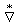
(정답률: 알수없음)
82. 국제 기상전보식에서 Nddff군의 N은 무엇을 나타내는 부호인가?
- 풍향
- 풍속
- 전운량
- 600m 이하의 하층운량
(정답률: 알수없음)
83. 등압선의 묘화에 대한 다음 설명 중 맞는 것은?
- 등압선은 서로 교차하지 않는다.
- 등압선은 도중에서 서로 합쳐지는 경우가 있다.
- 같은 시도의 등압선은 서로 평행하게 그려야 한다.
- 등압선은 도중에서 없어지기도 한다.
(정답률: 알수없음)
84. 지상기상전문의 Nddff란이 21299 00125 이면 다음 중 풍속으로 맞는 것은?
- 129knots
- 299knots
- 99knots
- 125knots
(정답률: 알수없음)
85. 지균풍(Geostrophic wind)에 대한 설명으로 틀린 것은?
- 마찰고도 상부에서 부는 바람이다.
- 기압경도력과 풍향은 직각을 이룬다.
- 전향력과 기압경도력이 평형을 이룬다.
- 바람이 불어가는 방향의 우측에 저압부가 있다.
(정답률: 알수없음)
86. 단열선도의 어떤 기압면의 상승응결고도로부터 습윤단열선을 따라서 원래의 기압면까지 하강시켰을 때의 온도는?
- 상당 온도
- 습구 온위
- 습구 온도
- 위상당 온위
(정답률: 알수없음)
87. 기단 변질의 원인과 가장 거리가 먼 것은?
- 일사량의 증가
- 지면으로부터의 가열
- 타 기단과의 혼합
- 풍속증가
(정답률: 알수없음)
88. 일기도에 사용되는 지도 중 위도·경도가 모두 직석으로 표시되는 지도는 무슨 도법으로 만든 것인가?
- 람베르트 원추도법
- 메르카토르 원통도법
- 극 평사도법
- 원추도법과 극평사도볍의 혼합
(정답률: 알수없음)
89. 한냉전선의 특징으로 틀린 것은?
- 기압은 전선통과 직후 급강하한다.
- 전선면의 경사가 크다.
- 소낙성 강수가 있다.
- 풍향은 전선통과 후 강한 서풍 또는 북서풍으로 바뀐다.
(정답률: 알수없음)
90. 수치예보의 지균풍 근사법을 도출한 사람은?
- 로스비(Rossby)
- 차니(Charney)
- 마규레스(Margules)
- 비야크네스(Bjerkness)
(정답률: 알수없음)
91. 어떤 관측소에서 보내온 기상전문 중 강수량에 대한 전문 6RRRtR을 보니 69942로 되어 있었다. 이 전문을 해설하면?
- 12시간 동안 강수량이 99.4mm이다.
- 6시간 동안의 강수량이 4.2mm이다.
- 6시간 동안의 강수량이 2mm 이다.
- 12시간 동안의 강수량이 0.4mm이다.
(정답률: 알수없음)
92. 국제기상전보식에서 YYGGiw군의 iw가 나타내는 것은?
- 풍속단위 지시부
- 강수자료 유무 지시부
- 기온단위 지시부
- 기압 변화량
(정답률: 알수없음)
93. 상승응결고도(LFC)위에 조건부 불안정층이 아주 깊을 때 발생하는 구름은?
- 적란운(Cb)
- 난층운(Ns)
- 층적운(Sc)
- 권적운(Cc)
(정답률: 알수없음)
94. 순수한 건조공기에서 기온과 같은 것은?
- 습구온도
- 노점온도
- 대류온도
- 상당온도
(정답률: 알수없음)
95. 1000hPa ~ 500hPa 층후선도에서 층후선은 다음 중 어느 기층의 등온선과 거의 비슷한가?
- 850hPa
- 700hPa
- 500hPa
- 300hPa
(정답률: 알수없음)
96. 지상에서 온난전선의 전면에 광범위한 구름구역과 강수현상이 발생하게 되는데 이런 저기압이 가까이 오는 것을 나타내는 첫 징후의 구름은?
- 권운
- 고층운
- 층적운
- 난층운
(정답률: 알수없음)
97. 다음 중 전선의 형성조건으로서 적합하지 않은 것은?
- 성질이 다른 두 기단이 부딪쳐 밀도와 온도의 불연속이 형성될 때
- 양측 또는 한쪽 기단이 변질하거나 멀어질 때
- 등온선과 유출축(axis of dilation)이 이루는 각이 45°보다 적을 때
- 큰 규모의 반대방향 기류가 만날 때
(정답률: 알수없음)
98. 블로킹 고기압(blocking high)과 절리 저기압(cut-off low)에 대한 설명 중 틀린 것은?
- 호우, 가뭄, 저온 현상 등과 같은 이상 기상의 원인이 된다.
- 열의 남북 교환이 활발할 때 주로 형성된다.
- 편서풍이 강한 시기에 생성된다.
- 블로킹이 형성되면 고기압과 저기압의 정상적인 이동속도에 영향을 준다.
(정답률: 알수없음)
99. 저기압에 관한 설명으로 틀린 것은?
- 온대지방에서 발생하는 온대 저기압과 열대지방에서 발생하는 열대 저기압이 있다.
- 저기압은 주변보다 기압이 낮은 곳이다.
- 바람이 저기압 중심을 향해 불어 들어가는 방향은 북반구에서는 시계 방향, 남반구에서는 반시계 방향이다.
- 상승류로 인해 구름이 만들어지면서, 강수 현상이 있게 된다.
(정답률: 알수없음)
100. 고기압에서 저기압보다 바람이 약한 이유로 타당한 것은?
- 기압 경도가 약하다.
- 습도가 낮다.
- 풍향이 천천히 순전(veering)한다.
- 불안정 지수가 낮다.
(정답률: 알수없음)